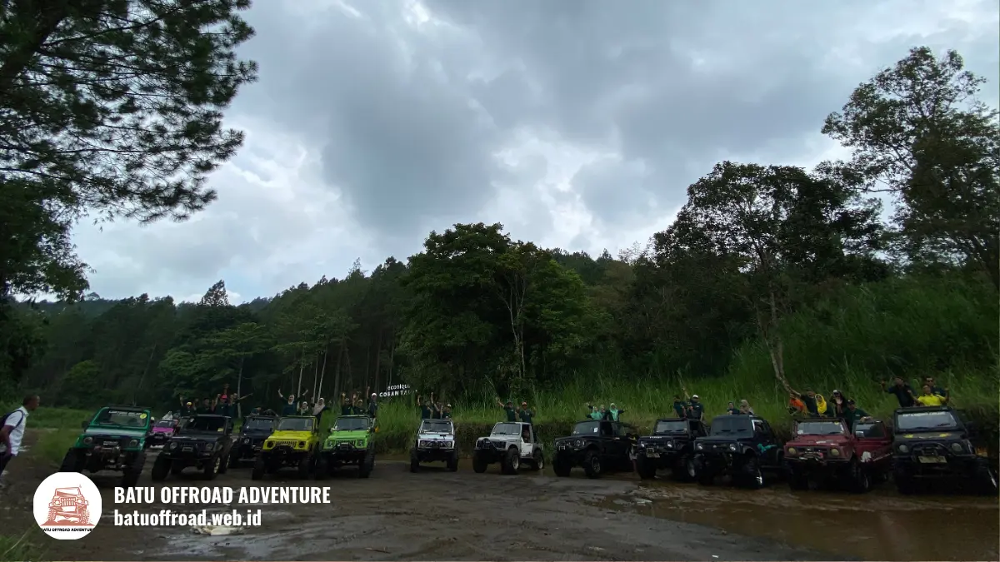
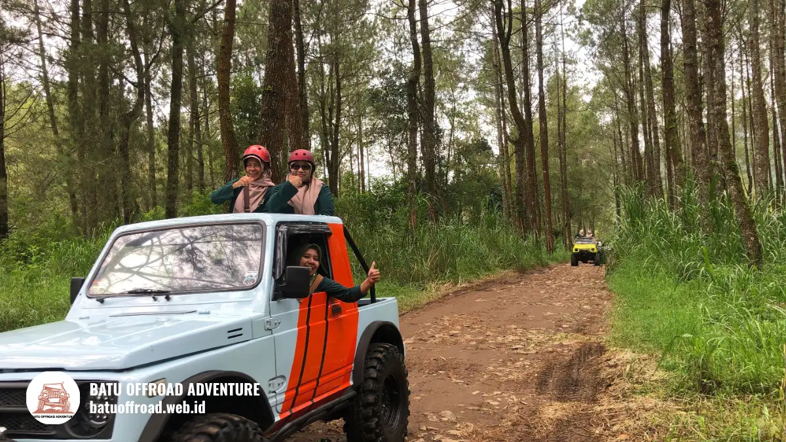

Isi Paket Fun Offroad Coban Talun yang Wajib Anda Ketahui
Cek isi paket fun offroad Coban Talun: jeep, driver guide, titik singgah, dan jadwal. Pelajari cara memilih paket sebelum booking.
BACA SELENGKAPNYAInformasi terbaru seputar dunia offroad di Batu dan tips berpetualang.

Cek isi paket fun offroad Coban Talun: jeep, driver guide, titik singgah, dan jadwal. Pelajari cara memilih paket sebelum booking.
BACA SELENGKAPNYA
Panduan fun offroad Coban Talun Batu: isi paket, rute, persiapan, dan cara booking. Baca dulu sebelum memesan jeep untuk liburan Anda.
BACA SELENGKAPNYA
Jeep adventure Batu Malang adalah wisata berkendara jeep 4x4 di area pegunungan Kota Batu, cocok untuk rombongan dan keluarga dengan paket rute fleksibel.
BACA SELENGKAPNYA
Isi dan harga jeep adventure Batu Malang bervariasi menurut rute, durasi, jumlah penumpang, dan fasilitas tambahan. Bandingkan penawaran secara adil.
BACA SELENGKAPNYA
Panduan persiapan pakaian berlapis, alas kaki antiselip, perlindungan debu, serta tips keselamatan untuk trip jeep adventure aman dan nyaman.
BACA SELENGKAPNYA
Cerita pengalaman rombongan melintasi jalur pegunungan, rundown alur trip dari awal sampai akhir, dan pentingnya pengemudi lokal berpengalaman.
BACA SELENGKAPNYA
Review lengkap pengalaman offroad batu malang: sensasi melewati jalur ekstrem, pesona alam menakjubkan, cerita dan testimoni wisatawan yang sudah mencoba, dan cara booking.
BACA SELENGKAPNYA
Daftar lengkap persiapan offroad batu malang: pakaian yang pas, barang bawaan penting, tips keselamatan, dan panduan pre-trip agar pengalaman aman dan nyaman.
BACA SELENGKAPNYA
Rincian lengkap isi paket, fasilitas, dan harga terbaru offroad batu malang dari Rp 400 ribu hingga Rp 2.5 juta per orang. Bandingkan paket short, medium, dan long trip di sini.
BACA SELENGKAPNYA
Panduan lengkap offroad batu malang dengan rincian paket, harga terbaru, rute menantang, tips persiapan, dan tips booking terpercaya untuk petualangan seru keluarga dan grup.
BACA SELENGKAPNYACoba gunakan kata kunci lain.